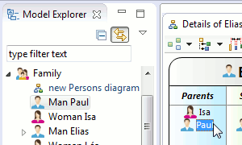
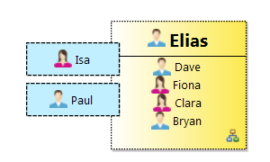

Sirius
Origins, Present, Future
Presented by Cédric Brun / @bruncedric
Slides published at http://cedric.brun.io/talks
CTO @ Obeo
Long history with Sirius
Origins of an OSS project

Going OSS Schedule

“Sirius is an Eclipse project which aims at providing specific multi-view modeling workbenches through diagram, table or tree editors based on EMF.
Users can easily define their own modeling workbench, even with very little technical knowledge of Eclipse, while still being able to deeply customize it when needed.”
The mission
“Lower the barrier of entry to create and deploy state of the art tools, for any domain language.”
- Sirius 0.9
- ☑ renamed and on Eclipse.org
- Sirius 1.0
- ☑ infrastructure and team 100% operational
- Sirius 2.0
- ☑ up to speed
What happened next ?
A few relases
| Version | Date | Closed | Feature Requests | |
|---|---|---|---|---|
| 1.0.0(Luna) | Jun 14, 2014 | 100 | 2 | |
| 1.0.1(Luna SR1) | Aug 14, 2014 | 20 | - | |
| 1.0.2(Luna SR2) | Jan 28, 2015 | 9 | - | |
| 2.0.0 | Oct 14, 2014 | 113 | 27 | |
| 2.0.1 | Nov 14, 2014 | 2 | - | |
| 2.0.2 | Dec 14, 2014 | 15 | - | |
| 2.0.3 | Jan 15, 2015 | 16 | - | |
| 2.0.4 | Feb 15, 2015 | 8 | - | |
| 2.0.5 | Apr 15, 2015 | 8 | - | |
| 2.0.6 | Jun 06, 2015 | 2 | - | |
| 3.0.0(Mars) | Jun 14, 2015 | 219 | 35 | |
| 3.0.1 | Sep 10, 2015 | 14 | - | |
| 3.0.2(Mars.1) | Sep 15, 2015 | 3 | - | |
| 3.1.0 | Oct 15, 2015 | 82 | 17 | |
| 3.1.1 | Oct 29, 2015 | 5 | - | |
| Total | 616 | 81 | ||
A few relases
| Version | Date | Closed | Feature Requests | |
|---|---|---|---|---|
| 1.0.0(Luna) | Jun 14, 2014 | 100 | 2 | |
| Aug 14, 2014 | 20 | - | ||
| Jan 28, 2015 | 9 | - | ||
| 2.0.0 | Oct 14, 2014 | 113 | 27 | |
| Nov 14, 2014 | 2 | - | ||
| Dec 14, 2014 | 15 | - | ||
| Jan 15, 2015 | 16 | - | ||
| Feb 15, 2015 | 8 | - | ||
| Apr 15, 2015 | 8 | - | ||
| Jun 06, 2015 | 2 | - | ||
| 3.0.0(Mars) | Jun 14, 2015 | 219 | 35 | |
| Sep 10, 2015 | 14 | - | ||
| Sep 15, 2015 | 3 | - | ||
| 3.1.0 | Oct 15, 2015 | 82 | 17 | |
| Oct 29, 2015 | 5 | - | ||
| Total | 616 | 81 | ||
Major versions!

Upgrading
- The runtime handles .odesign and .aird models for you
- Easy process :
- Check release notes for user-visible changes.

- Change update-site, versions
- In case of impacting API change, re-check the release notes for instructions
- Check release notes for user-visible changes.
Acceleo Query Language

Implementation specifically tailored for the Sirius use case
Sirius use case ?
- Many variables for a given expression
nullvalues are common- Navigation with many steps aggregating data
- Interactive use : context is constantly changing
- Complex or custom logic : Java Services
- Predictable ordering and performance overhead .
Language Characteristics
- You know OCL ? Then you know AQL
- No implicit variables
aql:nameis invalid and becomeaql:self.nameaql:self.eContents()->select(name.startsWith('A'))is invalid and becomeaql:self.eContents()->select(i | i.name.startsWith('A')self.referenceWithNoValue.someOtherAttributehas no evaluation error, and returns "Nothing" - Classic operations : filter, collect
- Convenient operations : eInverse(), eResource()..
Not strictly compatible* with MTL
*: but a subset of MTL works for both
Queries engines -- Overhead bench

- in preference to Acceleo 3 or OCL
- simpler for querying EMF models
- more concise and very easy to learn
- improved code completion
- improved syntax errors detection
Recommended query language for Sirius 3.1.0
 https://wiki.eclipse.org/Sirius/Update_Sites
https://wiki.eclipse.org/Sirius/Update_Sites
Definition Tooling : demo
- Workspace class loading is BACK
- Image path validation and selection wizard
- Quick Outline
- Prioritized sub menus
- ...
Diagram User Experience

Resizing a container (1.0)

Resizing a container (2.0)

Positioning Things

- Snap To Shape enabled by default for new diagrams
- Snape To All Shapes mode (F4)
- Snap To Grid now used when an element is created
- Resize no longer change ports or children's location
- Actions to distribute shapes
- Action to reset the diagram origin
Edges Layouting (1.0)

Edges Layouting (2.0)

Edges label instability (3.0)

Edges labels stability (3.1)

Bi-directional link with editor
Selection after tool execution

Beautiful editors
Anchor on borders 1.0

Anchor on borders 3.0

Underlined and Strike-through style for labels

Customizable border style
Compartments
Experimental


- Full blown "Mapping"
- static or dynamic number of compartments
- leverage queries
Compartments
Complete

- Corner cases and polish for 3.1
- Collapse
Compartments
Complete


First steps
Runtime strings are externalized
I18N services for AQL
dedicated mechanism for .odesign model
Faster
Goal : 1 Million Model Elements
Constant improvements
| Time (sec) | Heap (Mb) | Time Variation | Heap Variation | |
|---|---|---|---|---|
| Open Huge Project | 10 | 276 | -91,00% | -20,00% |
| Open Big Class Diagram | 11 | 24 | -54,00% | +20,00% |
| Refresh Big Class Diagram | 0,731 | 0 | -18,00% | 0,00% |
| Save After Diagram Change | 26 | 0 | -23,00% | 0,00% |
| Close Diagram | 0,1 | -6 | 0,00% | 0,00% |
| Close Project | 55 | 294 | 0,00% | 0,00% |
Big operations
- Models Footprint, ~20% improvement
- use of MinimalEObject
- Colors transformed from full-blown EObject to Immutable DataType
- detection and correction of leaks
- reduce usage of Adapters
- Save Strategy
- Improvements in the Image cache...
Latency
- Diagram Refresh
- UI Runtime
- Model Element Selection Dialogs for big models
- Right-click latency in the explorer
- Better integration with EEF (property views)
- Tables
- SWT Refreshes now done as a batch
- Table model refresh improvements
Demo

Me too !
- Performances depends on your .odesign specification
- Focus on queries wich would depend on the number of elements in the whole model
- Measure*, Improve, Repeat *: Sirius embedded profiler is one click away

Just a start
Sirius : Rich property views
- Seamlessly integrated
- Dynamic, no code generation involved
- Flexible
Sirius : Rich property views
- Seamlessly integrated
- Dynamic, no code generation involved
- Flexible
Other potential Themes for Eclipse Neon
- Scalability, Performance, Headless
- Better SVG rendering
- Prefered side for ports
- Improve the i18n Story
- Edges from/to list elements
- Tighter integration with the workspace
- Your priority
- Possibility to contribute bundled shapes : stencils collections
- API to control the "tab-bar"
- Improvement on edge reconnection feedback
Community Feedback
Many events !
114 hits for Github repositories using Sirius
Github - examples
Forums : from 0 to 100 msgs, 30 authors per month
Used Sirius already ?
- Get your entry in the gallery through Bug 448492
Take Aways
- Sirius : "State of The Art" modeling tools.
- Join the ~15 new authors every month on the Eclipse Forum
- Obeo Designer Community Edition : all in one package

TO BE CONTINUED...
Presented by Cédric Brun / @bruncedric
Slides published at http://cedric.brun.io/talks